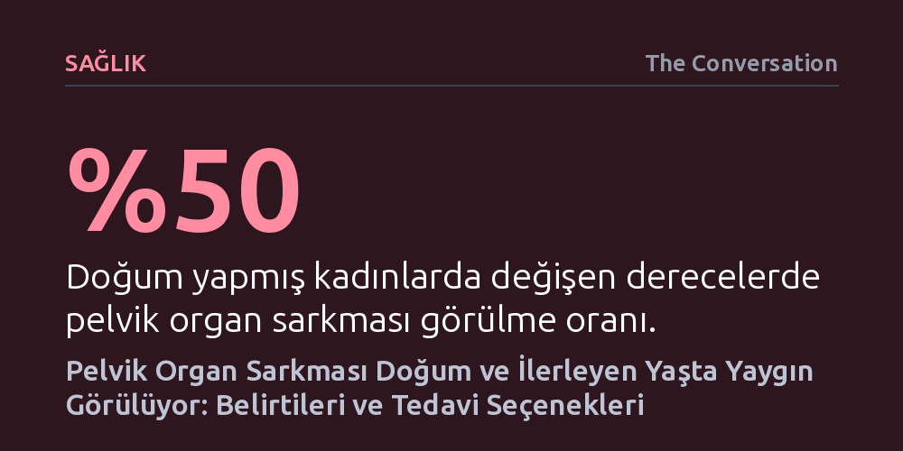

SAGLIK · The Conversation · 2026-10-19
Doğum yapmış kadınların yarısında görülen pelvik organ sarkması, çoğunlukla utançtan gizlense de egzersiz, peser veya cerrahiyle başarıyla tedavi edilebiliyor. Karın içi basıncını artıran etkenlerin tetiklediği bu anatomik sorun, erken teşhis ve doğru yaklaşımla kontrol altına alınabiliyor.
Pelvik organ sarkmasının kadınlar için yaşlanmanın veya anneliğin kaçınılmaz ve suskunlukla karşılanması gereken bir faturası değil, tıbben tanımlı ve her aşamada çözümü olan bir sağlık sorunu olduğunu gösterir.

Leğen kemiğinin tabanında yer alan kas ve bağ dokusu tabakası; rahmi, mesaneyi, idrar kanalını ve kalın bağırsağı alttan kavrayan güçlü bir hamak gibidir. Bu yapı, iç organların yerçekimine ve karın içi basınca karşı olağan konumlarında durmasını sağlar. Ancak hamak işlevi gören bu destek dokular zayıfladığında, organlar tutunamaz ve aşağıya doğru kaymaya başlar. Tıpta pelvik organ sarkması (prolapsus) olarak adlandırılan bu durum, bir veya birden fazla organın vajina kanalına doğru fıtıklaşmasıyla sonuçlanır.
Sarkma tek bir biçimde ortaya çıkmaz; etkilenen organa göre farklı anatomik görünümler kazanır. Mesanenin vajina ön duvarını iterek fıtıklaşması, kalın bağırsağın arka duvardan baskı yapması veya rahmin doğrudan vajina açıklığına doğru inmesi en sık rastlanan durumlardır. Daha önce rahmi alınmış kadınlarda ise vajinanın tepe kubbesi aşağı çökebilir. Çoğu vakada bu bölgelerin birkaçı aynı anda etkilenir ve kadınlar birden fazla organın yarattığı baskıyı bir arada hisseder.
Doğum yapmış kadınların yaklaşık yüzde 50'sinde değişen derecelerde pelvik organ sarkması görülür. Ancak risk yalnızca çok çocuk doğurmuş kadınlarla sınırlı değildir. Birden fazla doğum yapmak, dört kilonun üzerinde iri bebek dünyaya getirmek, forseps veya vakum yardımıyla doğum yapmak ve uzamış doğum eylemi risk ihtimalini belirgin şekilde artırır. Bununla birlikte, gebelik süresince pelvik tabana binen kesintisiz baskı nedeniyle sezaryenle doğum yapan kadınlarda, hatta hiç doğum yapmamış olanlarda dahi sarkma gelişebilir. İlerleyen yaş, menopoz dönemi, bağ dokusu hastalıkları ile kronik öksürük, kabızlık kaynaklı ıkınma ve ağır yük kaldırma gibi karın içi basıncı sürekli yükselten durumlar da süreci hızlandırır.
Sarkma yaşayan kadınlar sıklıkla kasıklarında derin bir dolgunluk, aşağıya doğru çekilme hissi ya da sanki küçük bir topun üzerine oturuyorlarmış gibi bir ağırlık tarif eder. Bu şikayetler genellikle günün sonuna doğru, uzun süre ayakta kalındığında veya fiziksel yorgunluk sonrasında belirginleşir. Durum ilerledikçe vajina girişinde pürüzsüz, etsi bir kitle hissedilebilir veya gözle görülebilir hale gelir. Bu kitle banyo yaparken, cinsel ilişki sırasında ya da hareket halindeyken fark edilebilir ve hafif bir rahatsızlık veya ağrıya yol açabilir.
Fiziksel şişkinliğe sıklıkla boşaltım sistemi güçlükleri eşlik eder. Sık idrara çıkma, aniden gelen sıkışma hissi, mesaneyi tam boşaltamama ve öksürme ya da gülme anında idrar kaçırma sıkça görülür. Bağırsak tarafında ise dışkılama güçlüğü baş gösterir; kimi kadınlar rahatlayabilmek için vajina duvarına parmakla bastırmak zorunda kalır. Bel ve kasık ağrısıyla da birleşen bu tablo, kadınlarda yoğun bir kaygı, utanç ve beden algısında zedelenmeye yol açar.
Pelvik organ sarkması teşhisi konulduğunda bunun çaresiz bir durum olmadığını bilmek gerekir; zira erken evreden ileri evreye kadar her aşamada etkili tedavi seçenekleri mevcuttur. Hafif vakalarda ilk başvurulan yöntem pelvik taban kas egzersizleridir (Kegel). Zayıflayan kas grubunu güçlendiren bu düzenli antrenmanlar, organların daha fazla sarkmasını engellemekle kalmaz; stres ve sıkışma tipi idrar kaçırma şikayetlerini de klinik olarak kanıtlanmış biçimde hafifletir.
Belirtileri belirgin olan ancak ameliyat olmak istemeyen ya da cerrahi açıdan risk taşıyan kadınlar için silikon peserler devreye girer. Muayenehane koşullarında kolayca takılabilen bu vajinal destek aparatları, sarkan organları yukarıda tutarak fıtıklaşmayı mekanik olarak önler. Kimi kullanıcılarda hafif doku tahrişine yol açabilse de ameliyatsız çözüm arayanlar için güvenli ve konforlu bir rahatlama sağlar.
Cerrahi müdahale ise sarkmanın ileri düzeyde olduğu ve diğer yöntemlerin yetersiz kaldığı durumlarda tercih edilir. Ameliyatlar çoğunlukla vajina içinden yapılan kesilerle yürütülür; zayıflayan vajina duvarları eriyebilen dikişlerle onarılarak mesane ve rektum desteklenir. Henüz çocuk doğurma planını tamamlamamış kadınlarda, sonraki gebelikler onarımı bozabileceğinden ameliyatın ertelenmesi tavsiye edilir. Doğum sürecini tamamlamış kadınlarda ise rahim tahliyesiyle birlikte vajina tepesini pelvik bağlara sabitleme işlemi uygulanabilir. Ancak cerrahinin kesin bir garanti sunmadığı, ameliyat geçiren kadınların yüzde 25 ila 30'unda sarkmanın nüksedebileceği unutulmamalıdır.
Fiziksel, psikolojik ve sosyal hayatı derinden sarsmasına rağmen kadınların önemli bir kısmı pelvik organ sarkması için hekime başvurmaktan kaçınır. Utanma duygusu, durumun yaşlanmanın ya da anneliğin 'ödenmesi zorunlu bir bedeli' olduğuna dair yaygın yanılgılar ve sağlık hizmetlerine erişim kısıtları kadınları sessizce beklemeye iter. Oysa sarkma bir kader değil, tanısı ve tedavisi olan tıbbi bir bozukluktur.
Bu sessizlik duvarını aşmanın yolu, sağlık personelinin rutin kontrollerde pelvik taban sağlığını doğrudan sorgulamasından geçer. Doğum öncesi ve sonrası ziyaretlerde ve menopoz muayenelerinde kadınlara bu belirtilerin sorulması, utanma bariyerini yıkar. Kültürel açıdan güvenli, damgalamadan uzak ve çok dilli bilgilendirmeler sayesinde kadınlar şikayetlerini saklamak yerine aile hekimlerine, kadın doğum uzmanlarına ve pelvik fizyoterapistlerine çok daha erken aşamada ulaşabilir.